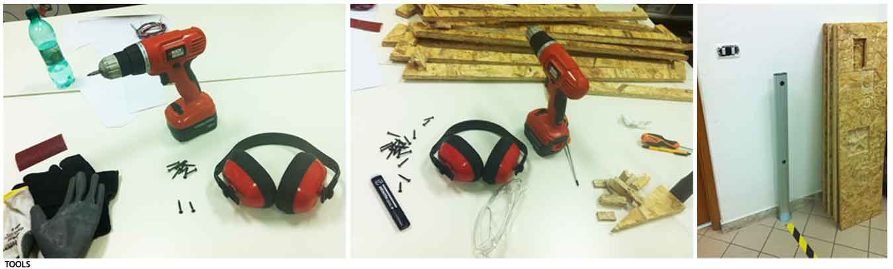
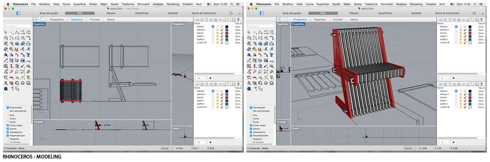
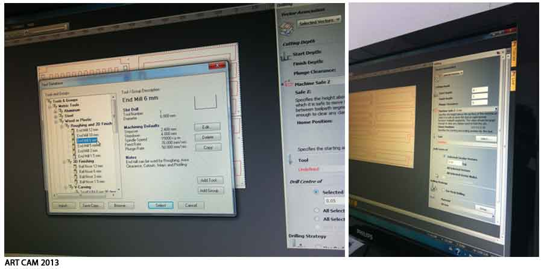
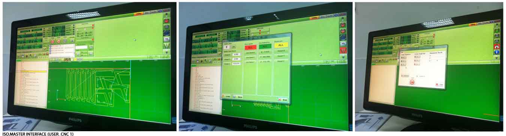
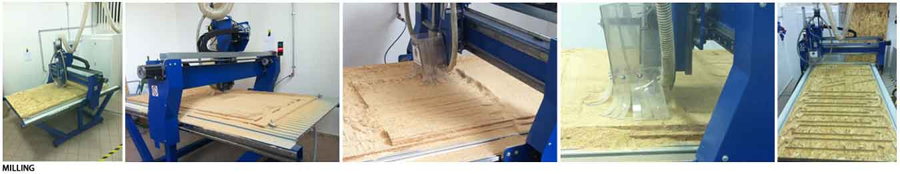
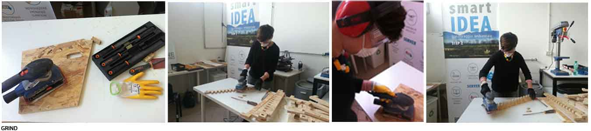
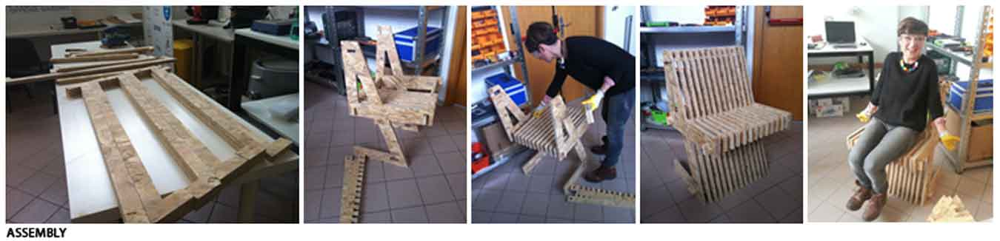
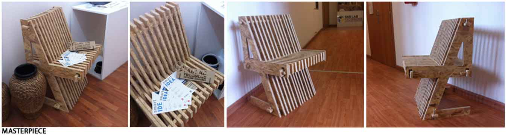

Week 8
Computer-Controlled Machining
Furnishing
Assignment: Make something big.
computer_machining/index.htmlFor this assignment, I decided to make a chair for my new home.
DESIGN
- I design my chair with Rhino. I drew very easy joints. Press fit parts require filleted slots on inside corners. We did a test to see if the joints work and the tolerance of the machine.
MATERIALS:
- Obs wood, 2.10m x 1.10m and thickness 18 mm.
Machine features:
Macchine CNC Enterprise
Work area (XxY): 2100 x 1100 mm;
Materials: wood, plexiglass, acrylic, foams, wax, clay, polystyrene;
TOOLS:
-Milling machine "Enterprise"
-End mill 6mm
-Mask
-Screws
-Glasses
-Screwdriver
-Gloves
-Headphones
-Vacuum cleaner
-Motion sensors
MODELING:
I modeled my chair with Rhinoceros.
I drew some points in the work area, outside of the areas involved in the main drawing. In this way it was possible to fix the table in the machine on the sacrificial worktop. In this way the board has been stationary while being milled.
Then I exported the selection in dxf.
SETTING-CUTTING:
I started Art Cam 2013 software

I imported the DXF file in ArtCam, and the software recognized the layers;
I told Art Cam which tool I was going to use, the material I had to cut and the features of the machine.;
After that, i selected the points that had to be drilled, in order to create the holes in which to place the screws to secure the board;
I chose the tool to use (wood-6mm);
I told the software where and how to drill (4mm) , feed rate: 76 mm/s, plunge: 50 mm/s, spindle: 15000 rpm;
I named the file(drill);
Calculate now
DRILLING:
I started Iso.Master Interface software.

-I loaded my file "drill.ISO";
-I placed the sacrificial worktop in the milling machine to preserve the machine and the tool;
-I positioned my work plan;
-I calculated the X-Y-Z;
-I checked the work path preview;
-The machine started to drill.
I used a screwdriver in order to fix the screws and to lock the board.
MILLING:
I repeated the same process, but in this case in order to cut and not to drill, so the values changed.
-I started Art Cam 2013 software;
-I selected the internal lines to be cut;
-Inside toolpath
-Start Depth 0
-Finish Depth 19mm
-Tool 6mm wood
-Bridges
-Name (cuttinginside)
-Calculate now
-Save.
-I did the same for the external lines, but I selected Outside toolpath.
-I started Iso.Master Interface software;
-I loaded my file "cuttinginside.ISO and cuttingoutside.ISO";
-X-Y-Z remained the same;
-I started again.
CLEANING:

GRIND:
ASSEMBLY:

The work I have described may seem simple and repetitive. Actually, at any moment something can happen.
An example: to prevent accidents, near the CNC machine were placed motion sensors, for our safety, we can not pass the yellow line during the milling.
After much difficulty, I was able to mill my chair, but in the middle of the work, a mate has passed the yellow line and the machine turned off.
I had to start all over again, from the axis positioning.
I was the first among my mates to perform this exercise. So, with my chair, I tested the problems of a new machine (CNC), that FabLab Frosinone had never used before.
Before milling, we did some tests, but apparently they were not sufficient. Even with a apparently correct G-code, with precise joints, the offset was either too loose or too tight.
I used pieces of wood as shims, and the chair has not swung anymore.